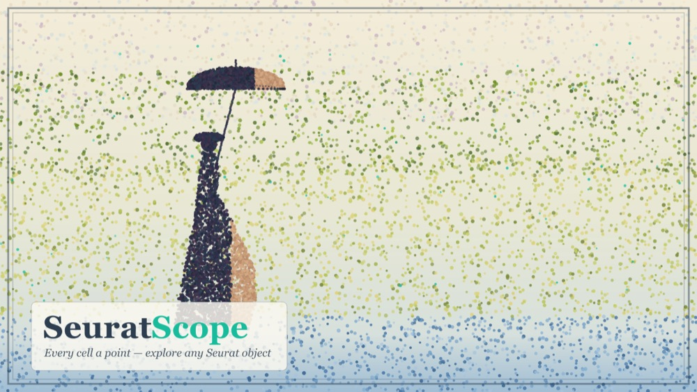
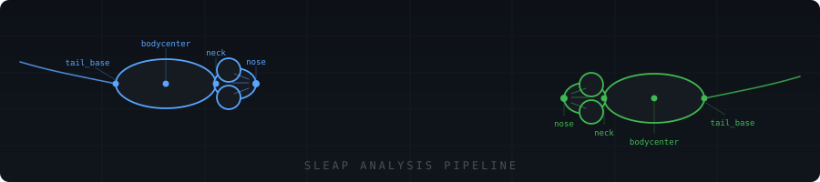

Biology, code & the space between
I make messy biological data easier to understand.
Hi, I’m Ikjot. I build practical ways to explore cells, tissues, genomes, and the occasional mouse video—then make sure someone else can actually run the analysis again.
See what I’ve been working onThe formal version ↗
observetest · explain
Some days it’s millions of cells. Other days it’s nearly a hundred mouse recordings. The interesting part is finding the question hidden inside the data.
Things I’ve built
Tools made for real lab work

01 · R Shiny application
SeuratScope
Drop in almost any Seurat object—single-cell, spatial, or Visium HD—and explore QC, embeddings, expression, tissue maps, composition, and metadata without writing code. The interface adapts to what the object actually contains.
R Shiny · Seurat · Interactive visualization
Open the maintained repository ↗02 · HPC workflows
SNS-EXT
A Minerva-ready adaptation of Seq-N-Slide for RNA-seq, ChIP-seq, ATAC-seq, methylation, exome, genome, and contamination-screening workflows—with LSF scheduling and reproducible environments built in.
Shell · LSF · Pixi · Minerva
See the Naiklab pipeline ↗
8 µm16 µm
03 · Spatial transcriptomics
Visium HD Pipeline
A reusable Seurat workflow for 10x Visium HD data at multiple bin sizes, with QC, clustering, annotation support, and a structure meant to survive beyond one project.
R · Seurat · Visium HD · HPC
Open the maintained repository ↗

04 · Applied machine learning
SLEAP Analysis Pipeline
A Python toolkit that turns pose estimates into trajectories, inter-animal distances, velocity profiles, and cumulative movement summaries at useful time scales.
Python · SLEAP · Behavior · Visualization
Open the maintained repository ↗
And still evolving: a generalized single-cell RNA-seq pipeline with mandatory ambient-RNA correction, doublet removal, and reports for both analysts and biologists.
Tools I admire
Good software changes how you think
These are projects I return to—not because I built them, but because they solve hard problems with unusual clarity and ambition.
Experience
Where I’ve been doing the work
2024—Now
Bioinformatician II
Mount Sinai · Naik Lab
Lead sequencing analyses and develop reusable spatial and single-cell workflows.
2019—2024
Bioinformatics Analyst → Senior Bioinformatics Programmer
NYU Langone Health · Naik Lab and Applied Bioinformatics Laboratories
Built analysis workflows and supported studies across transcriptomic, epigenomic, spatial, and microbiome data.
2018—2019
Research Assistant and Hub Analyst
Boston University
Worked on single-cell and bulk RNA-seq studies while completing an MS in Bioinformatics.
One paper I’m proud of
Using tissue geography to understand psoriasis
Science Immunology · 2023
Spatial transcriptomics stratifies psoriatic disease severity by emergent cellular ecosystems
Castillo, R.L., Sidhu, I., et al. · Co-first author
The rest live on ORCID ↗